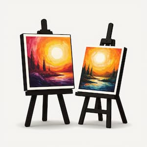
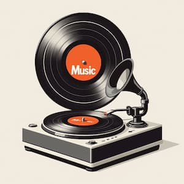
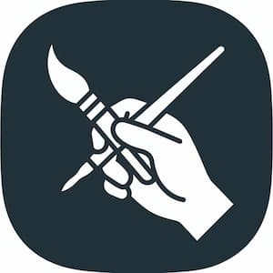
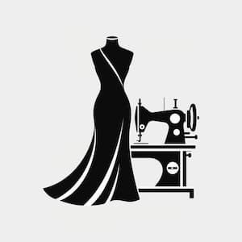
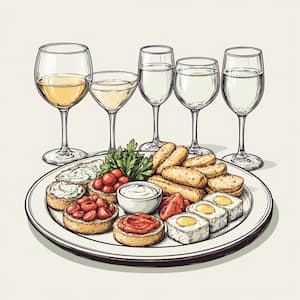

«Лазурь» приглашает на Арт-салон: День творчества, музыки и вдохновения!

Дорогие друзья, партнеры и коллеги!
У нас замечательная новость! 30 апреля 2026 года типография «Лазурь» превратится в настоящую творческую лабораторию. В честь дня рождения нашего предприятия мы проведем уникальное мероприятие — Арт-салон на один день.
Это будет пространство, где встречаются печатное дело и чистое искусство. Мы объединим на одной площадке живопись, музыку, моду и ремесло, чтобы создать особую атмосферу праздника.
В программе Арт-салона:
-
Выставка картин: Мы покажем работы художников, с которыми сотрудничаем, и
тех, чье творчество любим и ценим.

-
Музыкальная гостиная: Живое выступление музыкального коллектива наполнит день
особенным шармом и задаст настроение.

-
Арт-мастерские: Хотите попробовать себя в новом деле? Приходите на наши
мастер-классы, где каждый сможет научиться интересному мастерству.

-
Показ мод: Увидим, как творчество дизайнеров сочетается с настроением весны и
печатным искусством.

-
Фуршет: Приятное общение с единомышленниками в неформальной обстановке.

Мы ждем в гости наших постоянных заказчиков, партнеров и, конечно, весь большой коллектив «Лазури»!
Станьте частью «Лазури»!
Мы уверены, что творчество не знает границ. Поэтому мы открыты для новых знакомств! Если вы — художник, начинающий дизайнер, производитель авторских аксессуаров, писатель или поэт, и хотите заявить о себе, мы с радостью предоставим вам площадку и возможность участия. Расскажите о себе, а мы поможем с информационной поддержкой на нашем сайте и в социальных сетях. Давайте дружить, творить и быть полезными друг другу!
Ждем вас 30 апреля 2026 года на территории ИПК «Лазурь». Приходите за вдохновением!